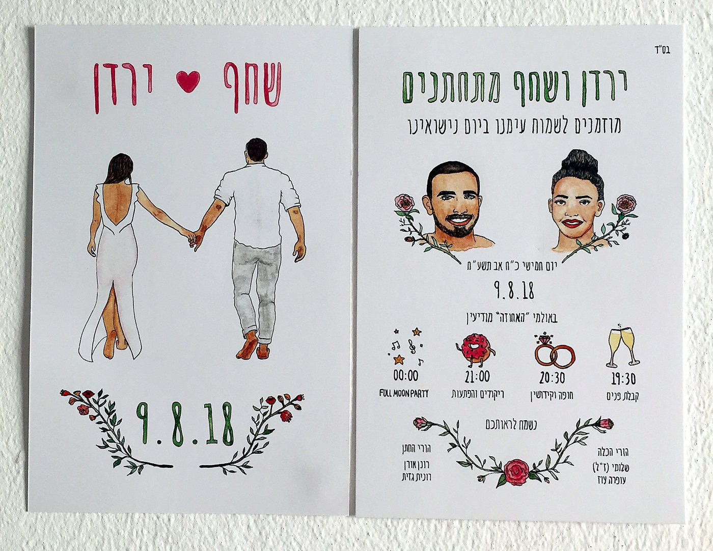
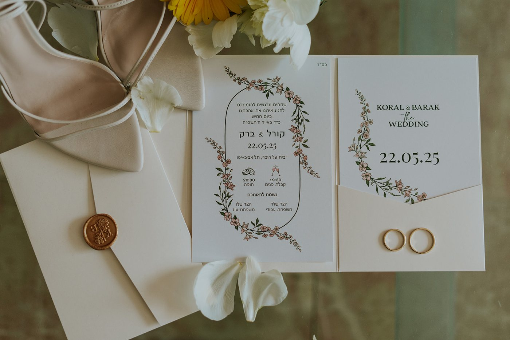
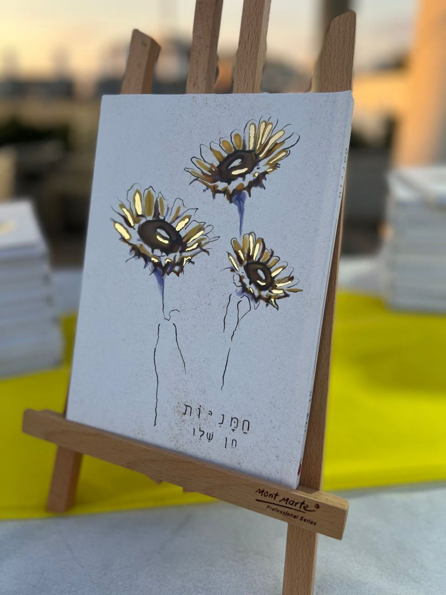
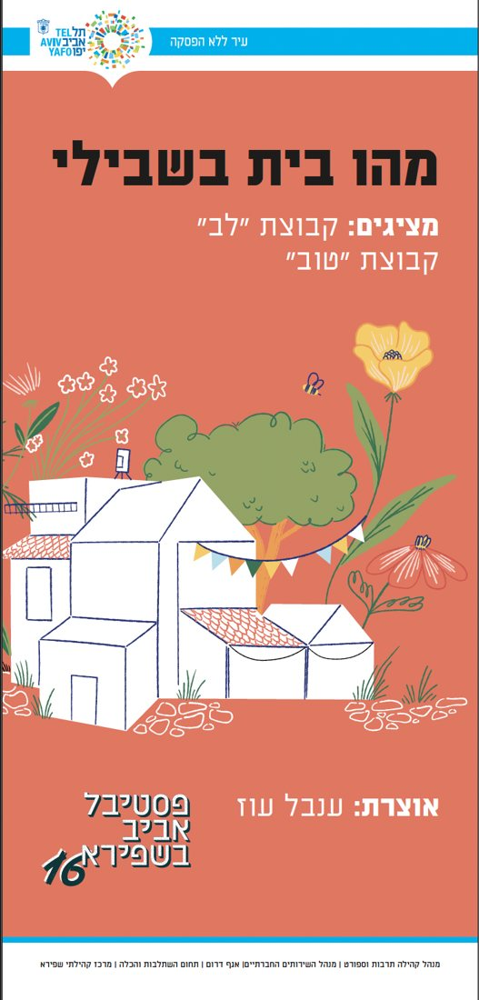

01 / 04
Yarden & Shahaf
A hand-painted watercolor wedding invitation, front and back, with portraits of the couple.
For couples · Invitation
Scroll down. The work slides sideways, one screen each.

A hand-painted watercolor wedding invitation, front and back, with portraits of the couple.

A quiet invitation with a wax seal, designed around the flowers of the day.

An illustrated cover, drawn to carry the book's mood from the shelf.

An exhibition I curated with two groups of creators, at the Aviv in Shapira festival.
After the last one, the page carries on down.